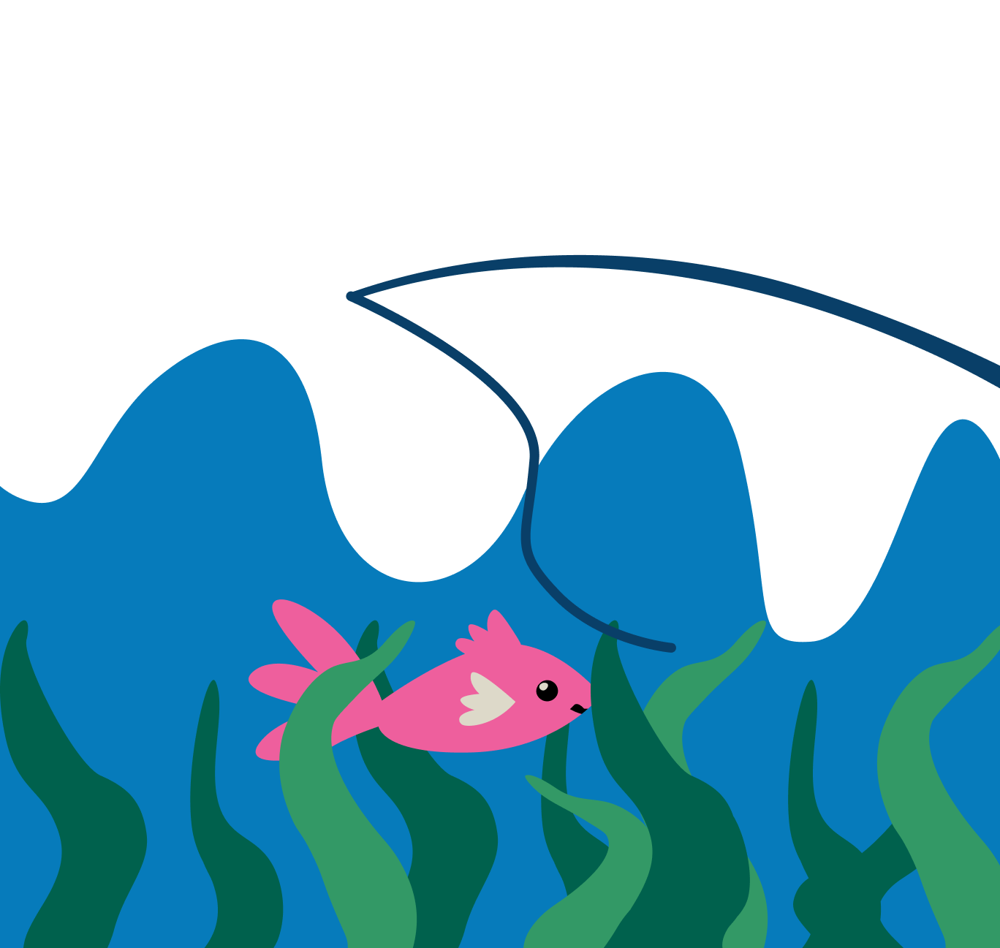
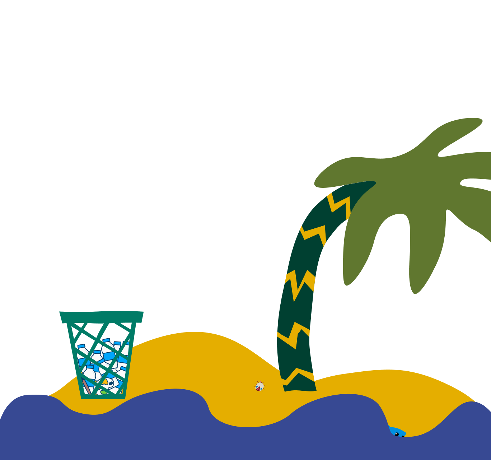
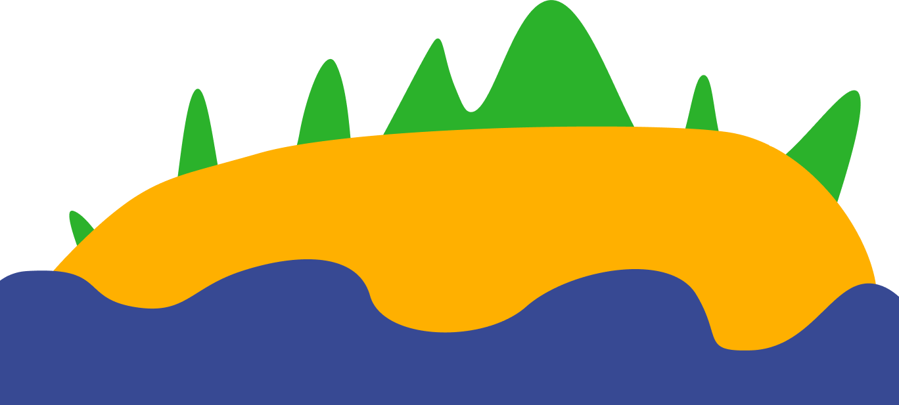
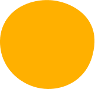
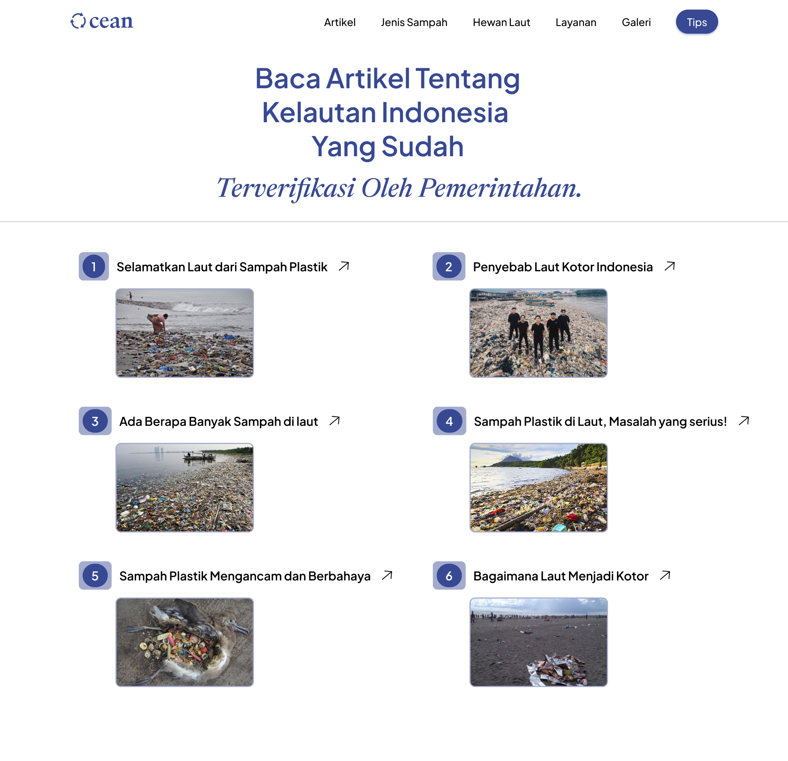
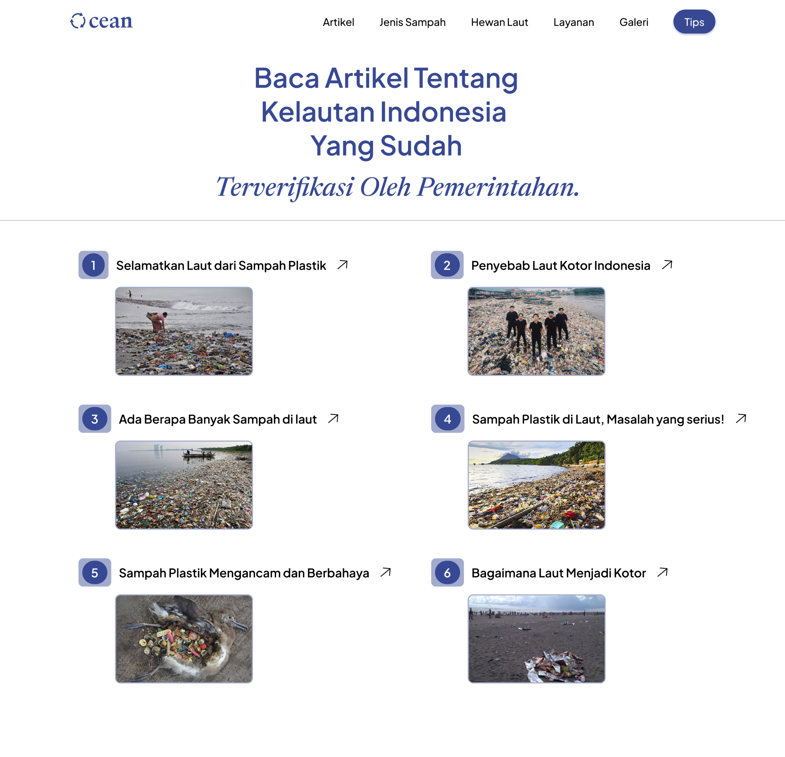
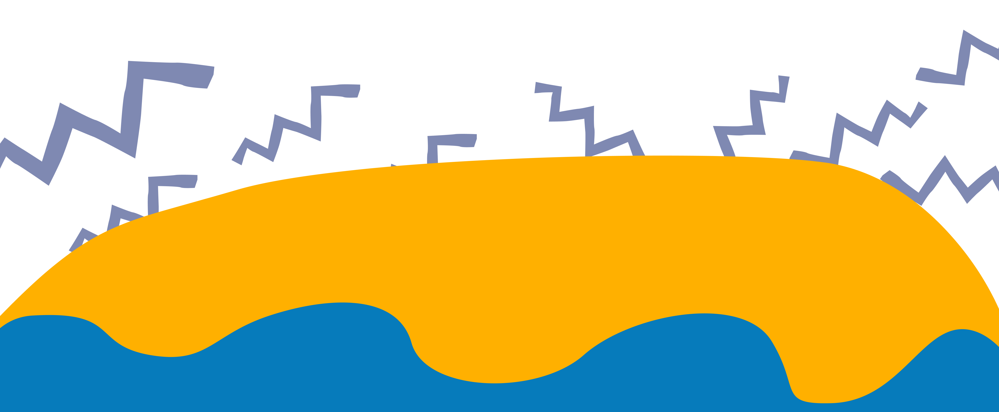

12,7 Juta
Ton Plastik Masuk Ke Laut Setiap Tahun.
Sebagai warga masyarakat indonesia, kita punya tanggung jawab untuk menjaga alam negara.
Ocean menyediakan seputar berita, cara, dan tips yang dapat mengedukasi agar lebih sadar tentang batapa pentingnya kita untuk menjaga laut.
Penghasil Sampah Plastik Terbanyak.
Berikut lima negara yang menjadi penyumbang limbah plastik ke lautan di dunia, yaitu China, Amerika, India, Brazil, dan Indonesia.
https://indonesiabaik.id/infografis/indonesia-darurat-sampah-plastik-laut
3+ Cara Untuk
Menjaga Laut
1
Tidak Sembarangan Memancing Hewan Laut.
2
Tidak membuang sampah ke laut, Buanglah sampah di tempatnya.
3
Menjaga kelestarian terumbu Karang dan melakukan reboisasi pantai dengan tanaman bakau.
 Kenali Hewan - Hewan Laut
Penting bagi kita mengetahui hewan laut untuk melindungi spesies yang hampir punah
Lebih Lanjut Button TextKenali Jenis-Jenis Sampah
Pelajari Button Text 

Baca - Baca Artikel Yang Sudah Terverifikasi Pemerintah
Ocean menyediakan artikel - artikel yang relevan dan sudah terverifikasi oleh pemerintah untuk meng-edukasi audience agar lebih cermat dalam membuang sampah.
Baca Artikel Button TextJadi bagian dari orang yang sadar akan Lingkungannya
Penting
Jangan Lupa Membuang Sampah Pada Tempatnya Agar Lingkunganmu Bersih
